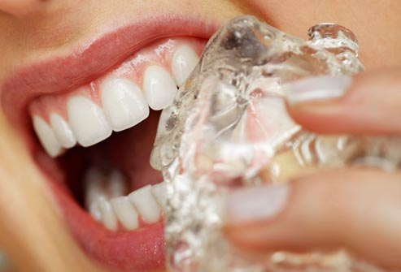
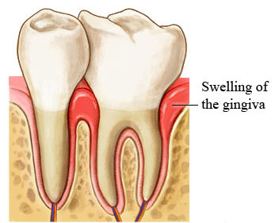
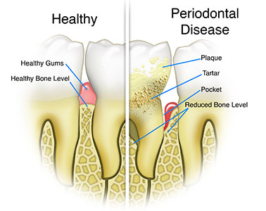

Dentosafe® » Quick Sensitive Relief & Gum Care
Your Complete Oral and Dental Care solution
Your Complete Oral and Dental Care solution
Dentosafe quick sensitive relief & gum care toothpaste, formulated by FDI Accepted & recommended formula. Dentosafe provides the following benefits:
Best quality raw materials of Vietnam, Malaysia and Indonesia origin and CMC from Switzerland are used for manufacturing of DENTOSAFE toothpaste
Tooth sensitivity is something that affects a number of people. It is often caused by eating or drinking something hot, cold, sweet or acidic. Under normal conditions, the underlying dentin of the tooth (the layer that immediately surrounds the nerve) is covered by the enamel in the tooth crown, and the gums that surround the tooth. Over time, the enamel covering can get thinner, thus providing less protection. The gums can also recede over time, exposing the underlying root surface dentin. The dentin contains a large numbers of pores or tubes that run from the outside of the tooth to the nerve in the center. When the dentin is exposed, these tubes can be stimulated by changes in temperature or certain foods.
Exposure of the dentin can occur due to a number of factors. Some of the more common reasons are:
In addition, some dental treatments can cause sensitivity. Treatments such as such as teeth whitening, professional dental cleanings, having braces put on or getting a filling placed have been known to cause sensitivity during or after the procedure.
The first step in doing something about dental sensitivity is to find out what the cause is – a dental professional can help you with this. If the sensitivity is due to exposed dentin, there are a number of steps you can take, as can your dental professional, to help reduce the sensitivity. These can include:
The dental professional can:
In the end, whether you need an in-office procedure or over-the-counter products, the most important step is to see a dental professional so that he or she can determine the cause of the tooth sensitivity and help you find a solution that will work.
The potassium ion in Dentosafe medicated toothpaste are reported to work by blocking the synapse between the nerve cells, reducing nerve excitation and the associated pain. Research has proven efficacy of 5% KNO3 in Dentosafe medicated toothpaste obliterating the tubules. If the radius of the tubuli is reduce via obliteration, the fluid flow within the tubuli falls, ultimately reducing dentine hyper sensitivity.
Oral health touches every aspect of our lives but is often taken for granted. Your mouth is a window into the health of your body. It can show signs of nutritional deficiencies or general infection. Systemic diseases, those that affect the entire body, may first become apparent because of mouth lesions or other oral problems.
Whether you are 80 or 8, your oral health is important. Most Americans today enjoy excellent oral health and are keeping their natural teeth throughout their lives; however, cavities remain the most prevalent chronic disease of childhood. Some 100 million Americans fail to see a dentist each year, even though regular dental examinations and good oral hygiene can prevent most dental disease. Many people believe that they need to see a dentist only if they are in pain or think something is wrong, but regular dental visits can contribute to a lifetime of good oral health. If you are experiencing dental pain, don't put off seeing a dentist. With dentistry's many advances, diagnosis and treatment are more sophisticated and comfortable than ever.
The practice of cleaning the human mouth and human teeth has been known to be completed in different ways, most common of all is tooth brushing. Brushing ones teeth has been a dental care concept for many years, known to have been observed in the ancient Egyptians. The act of toothbrushing normally consists of two tools, a toothbrush, and toothpaste. A toothbrush consists of a handle which has fiber bristles on one end, this brush is used scrub the teeth. Toothpaste is a gel paste often applied to the toothbrush to enhance oral hygiene, toothpastes have also been known to have another usage, which is to beautify teeth
The active ingredients in dentosafe medicated toothpaste include sodium monofluorophosphate & potassium nitrate. It is the specific compound that influences the minerals already present in the saliva to crystallize and cover the pores in the tooth. After a few weeks of using the toothpaste, the tooth should be less sensitive. Aggressive brushing with a hard bristle tooth brush may wear away the coating of the tooth, which will cause the sensitivity to return.
Gum disease, or gingivitis, is inflammation of the tissues surrounding and supporting the teeth and is most commonly a result of poor dental hygiene. Gingivitis is a very common condition and varies widely in severity. It is characterized by red, swollen gums that bleed easily when teeth are brushed or flossed. Gingivitis is not the same thing as periodontitis, although sometimes a person may be affected by both.
A common cause of tooth loss after age 35 is gum (periodontal) disease. These are infections of the gum and bone that hold the teeth in place. Gum diseases are also caused by dental plaque. The bacteria in plaque causes the gums to become inflamed and bleed easily. If left untreated, the disease gets worse as pockets of infection form between the teeth and gums. This causes receding gums and loss of supporting bone. You may lose enough bone to cause your teeth to become loose and fall out. You can prevent gum disease by removing plaque. Thoroughly brush and floss your teeth each day. Carefully check your mouth for early signs of disease such as red, swollen, or bleeding gums. See your dentist regularly every 6-12 months - or at once if these signs are present.
Gum disease is mostly caused by improper oral hygiene which allows bacteria in plaque and calculus to remain on the teeth and infect the gums. But there are other factors that increase the risk of developing gingivitis. Some examples are the following:
A healthy human mouth is home to more than 600 different types of bacteria and other micro organisms. Proteins in the saliva binds to the teeth surface to form a thin layer called as Pellicle. Various types of oral bacteria present in the mouth colonise the pellicle and forms a layer of Plaque. Large colonies of Bacteria are also found in the small crevices and grooves of the tongue surface. This progressively thickening layer of plaque and the bacterial colonies in the tongue surface are primarily responsible for most of the oral health issues. The active ingredients in dentosafe medicated toothpaste include sodium monofluorophosphate & potassium nitrate. It is the specific compound that influences the minerals already present in the saliva to crystallize and cover the pores in the tooth.
“It's the best toothpaste , which can relief tooth sensitivity and at the same time it also solve gum problems (gum bleeding) !”
Sufia Rahman Haris Family Dentistry
“This is the first toothpaste I've used that has actually relief my teeth sensitivity noticeably. The difference is quite astonishing and I would recommend this to anyone.”
Rakesh Shikon Academy